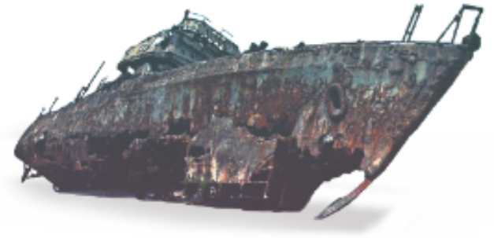
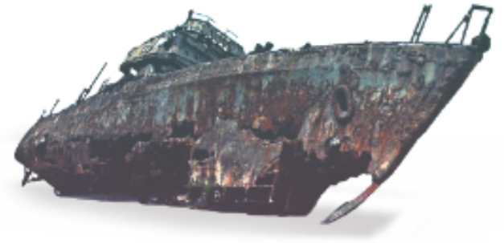

The Saberooth's autonomous functionality, 6D movement, coverage, stability and speed allows the Sabertooth to deliver better data, quicker, and with fewer operators.
Configurable auxiliary equipment includes a heavy-duty cleaning brush and various sonars for mapping the seabed and below.
Sabertooths can be integrated with 3rd party control systems, allowing for AI and machine learning methods for integrating data, data visualization, remote vehicle control and mission planning.
It is the only roaming and hovering system with 6DoF operating in AUV and ROV.
 A lightweight, powerful Inspection Maintenance & Repair (IMR) autonomous vehicle made by SAAB SeaEye, a part of SAAB group
The Sabertooth is ideal for a variety of missions: inspection, repair and maintenance, research tasks and environmental monitoring.

A lightweight, powerful Inspection Maintenance & Repair (IMR) autonomous vehicle made by SAAB SeaEye, a part of SAAB group
The Sabertooth is ideal for a variety of missions: inspection, repair and maintenance, research tasks and environmental monitoring.
